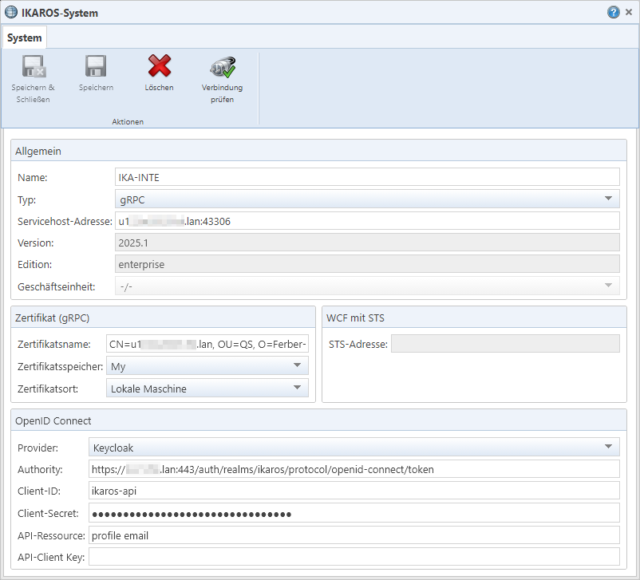

Textfeld „Name“: Der maximal 50
Zeichen lange, eindeutige Name für das IKAROS-System. Er wird bei Wahl des
Systems als Quell- oder Zielsystem in den Dialogen und Anmeldedialogen
angezeigt.
Textfeld „Name“: Der maximal 50
Zeichen lange, eindeutige Name für das IKAROS-System. Er wird bei Wahl des
Systems als Quell- oder Zielsystem in den Dialogen und Anmeldedialogen
angezeigt.
Abb. 36: Der Bearbeitungsdialog für ein IKAROS-System
Wichtig: Bereits verwendete Systeme können nur eingeschränkt geändert werden
Sobald ein System in einem Change, Change Set oder Transportauftrag eingetragen ist, können weder sein Name noch die URLs nachträglich verändert oder gelöscht werden – mit Ausnahme des „Client-Secret“ (bei Einsatz von OIDC). Dies soll sicherstellen, dass Quellsysteme/Zielsysteme nicht versehentlich oder mutwillig durch komplett andere IKAROS-Systeme ersetzt werden.
Falls Sie die URLs oder Ports eines IKAROS-Systems ändern oder einen anderen Namen verwenden möchten, müssen Sie daher einen neuen System-Eintrag dafür anlegen und alle Changes, Change Sets und Transportaufträge für das neue System erneut anlegen.
Die Felder im Dialog
Textfeld „Name“: Der maximal 50
Zeichen lange, eindeutige Name für das IKAROS-System. Er wird bei Wahl des
Systems als Quell- oder Zielsystem in den Dialogen und Anmeldedialogen
angezeigt.
Listenfeld „Typ“: Legt fest, mit
welcher Service-Schnittstellen-Technologie und welcher Authentifizierungsmethode
der Ziel-Service angesprochen werden soll. Sie müssen hier denjenigen Typen
wählen, der vom IKAROS-Zielsystem verwendet wird. Weitere Informationen hierzu
finden Sie in der Dokumentation des Menüpunkts [Administration -> Services] in IKAROS (Kapitel-ID
„fs_a8c663c5abe7“).
Textfeld „ServiceHost-Adresse“:
Die URL zum IKAROS-Anwendungs-Server (ServiceHost) des IKAROS-Systems.
Textfeld „Version“: Die
IKAROS-Version des Systems. Sie wird nach erfolgreicher Ausführung von
„Verbindung prüfen“ automatisch aus der Datenbank des Systems ermittelt und kann
nicht manuell bearbeitet werden.
Textfeld „Edition“: Die
IKAROS-Edition des Systems.
Listenfeld „Geschäftseinheit“:
Die Geschäftseinheit aus dem IKAROS-Zielsystem, in die das TRMS die Transporte
durchführen soll. Nur relevant, wenn das IKAROS-System für den Mehrfirmenbetrieb
eingerichtet ist. Wenn dies zutrifft, wird bereits beim Aufrufen des
Bearbeitungsdialogs eine Verbindung hergestellt, bei der unter anderem die
Geschäftseinheiten des Zielsystems abgefragt werden. Falls bei dieser
Verbindungsaufnahme festgestellt wird, dass der Mehrfirmenbetrieb im Zielsystem
nicht (mehr) aktiv ist, erhalten Sie eine entsprechende Meldung Informationen
zum Mehrfirmenbetrieb von IKAROS finden Sie in der Hilfe von IKAROS (nicht im
TRMS) im Kapitel mit der ID „fs_ad5a9d815892“.
Rahmen „Zertifikat (gRPC)“ und „OpenID Connect“
Die Felder in diesen Rahmen sind funktional identisch mit den gleichnamigen Feldern in den „Services“-Stammdaten in IKAROS. Weitere Informationen hierzu finden Sie in der Dokumentation des Menüpunkts [Administration -> Services] in IKAROS (Kapitel-ID in der IKAROS-Hilfe: „fs_a8c663c5abe7“).
Textfeld „API-Client Key“: Legt
optional den API-Schlüssel (eine GUID) desjenigen API-Clients aus dem
IKAROS-Zielsystem fest, in dessen Benutzerkontext (IKAROS-Rechte, Claims usw.)
der Transport und das Abfragen von Artefakten erfolgen kann. Falls leer, wird
der „Daemon“-Benutzer des IKAROS-Systems verwendet. Die Verbindungsprüfung kann
nur erfolgreich sein, wenn es im IKAROS-Zielsystem tatsächlich einen API-Client
(in IKAROS unter [Administration ->
API-Clients]) mit diesem Schlüssel gibt. Weitere Informationen hierzu
finden Sie in der IKAROS-Hilfe im Kapitel mit der ID „fs_29b57d418a77“.
Schaltflächen
|
Symbol |
Schaltfläche |
Beschreibung |
|
|
„Speichern & Schließen“ [Strg] + [H] |
Speichert die Änderungen an den Systemverbindungsdaten und schließt den Dialog. Nur aktiv, wenn Änderungen vorliegen und „Verbindung prüfen“ erfolgreich ausgeführt wurde. |
|
|
„Speichern“ [Strg] + [S] |
Speichert die Änderungen an den Systemverbindungsdaten. Nur aktiv, wenn Änderungen vorliegen und „Verbindung prüfen“ erfolgreich ausgeführt wurde. |
|
|
„Löschen“ [Strg] + [D] |
Löscht die Systemverbindungsdaten nach der Bestätigung einer Sicherheitsabfrage dauerhaft aus der Datenbank des TRMS. Auf das tatsächliche IKAROS-System, auf das diese Daten verweisen, hat das Löschen keinen Einfluss. Das Löschen ist nur möglich, wenn das System noch nicht in Changes, Change Sets oder Transportaufträgen eingetragen ist. |
|
|
„Verbindung prüfen“ [Strg] + [K] |
Ruft den Anmeldedialog auf, um sich an dem System testweise anzumelden und so die Verbindungsdaten zu überprüfen. „System“-Datensätze können erst gespeichert werden, wenn die Verbindungsprüfung erfolgreich war. |